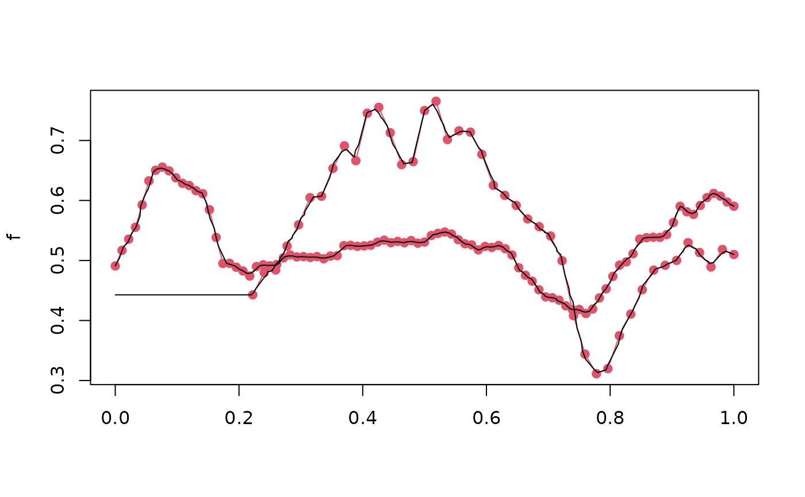

Various constructor and conversion methods.
tfd.data.frame uses the first 3 columns of data for function information by default:
(id, arg, value)
tfd.list accepts a list of vectors of identical lengths
containing evaluations or a list of 2-column matrices/data.frames with
arg in the first and evaluations in the second column
return class prototype when argument to tfd() is NULL or not a recognised class
as.tfd(data, ...)
as.tfd_irreg(data, ...)
# S3 method for tf
as.data.frame(x, row.names = NULL, optional = FALSE, ...)
# S3 method for tfd
as.matrix(x, arg, interpolate = FALSE, ...)
tfd(data, ...)
# S3 method for matrix
tfd(
data,
arg = NULL,
domain = NULL,
evaluator = tf_approx_linear,
resolution = NULL,
...
)
# S3 method for numeric
tfd(
data,
arg = NULL,
domain = NULL,
evaluator = tf_approx_linear,
resolution = NULL,
...
)
# S3 method for data.frame
tfd(
data,
id = 1,
arg = 2,
value = 3,
domain = NULL,
evaluator = tf_approx_linear,
resolution = NULL,
...
)
# S3 method for list
tfd(
data,
arg = NULL,
domain = NULL,
evaluator = tf_approx_linear,
resolution = NULL,
...
)
# S3 method for tf
tfd(data, arg = NULL, domain = NULL, evaluator = NULL, resolution = NULL, ...)
# S3 method for default
tfd(
data,
arg = NULL,
domain = NULL,
evaluator = tf_approx_linear,
resolution = NULL,
...
)a matrix, data.frame or list of suitable shape, or another tf-object. when
this argument is NULL (i.e. when calling tfd()) this returns a prototype of class tfd
not used in tfd, except for tfd.tf -- specify arg and ìnterpolate = TRUE to
turn an irregular tfd into a regular one, see examples.
a tf object
NULL or a character vector giving the row
names for the data frame. Missing values are not allowed.
not used!
numeric, or list of numerics. The evaluation grid. See Details on its
interplay with resolution.
For the data.frame-method: the name/number of the column defining the
evaluation grid. The matrix method will try to guess suitable arg-values
from the column names of data if arg is not supplied. Other methods fall back on
integer sequences (1:<length of data>) as the default if not provided.
should functions be evaluated (i.e., inter-/extrapolated)
for values in arg for which no original data is available? Only relevant for
tfd, defaults to TRUE.
range of the arg.
a function accepting arguments x, arg, evaluations. See details for tfd().
resolution of the evaluation grid. See details for tfd().
The name or number of the column defining which data belong to which function.
The name or number of the column containing the function evaluations.
a one-column data.frame with a tf-column containing xan tfd-object (or a data.frame/matrix for the conversion functions, obviously.)
evaluator: must be the (quoted or bare) name of a
function with signature function(x, arg, evaluations) that returns
the functions' (approximated/interpolated) values at locations x based on
the function evaluations available at locations arg.
Available evaluator-functions:
tf_approx_linear for linear interpolation without extrapolation (i.e.,
zoo::na.approx() with na.rm = FALSE) -- this is the default,
tf_approx_spline for cubic spline interpolation, (i.e., zoo::na.spline()
with na.rm = FALSE),
tf_approx_fill_extend for linear interpolation and constant extrapolation
(i.e., zoo::na.fill() with fill = "extend")
tf_approx_locf for "last observation carried forward" (i.e.,
zoo::na.locf() with na.rm = FALSE and
tf_approx_nocb for "next observation carried backward" (i.e.,
zoo::na.locf() with na.rm = FALSE, fromLast = TRUE).
See tidyfun:::zoo_wrapper and tidyfun:::tf_approx_linear, which is simply
zoo_wrapper(zoo::na.tf_approx, na.rm = FALSE), for examples of implementations of
this.
resolution: arg-values that are equivalent up to this difference are
treated as identical. E.g., if an evaluation of \(f(t)\) is available at \(t=1\)
and a function value is requested at \(t = 1.01\), \(f(1)\) will be returned if
resolution < .01. By default, resolution will be set to an integer-valued power
of 10 one smaller than the smallest difference between adjacent
arg-values rounded down to an integer-valued power
of 10: e.g., if the smallest difference between consecutive
arg-values is between 0.1 and 0.9999, the resolution will be 0.01, etc.
In code: resolution = 10^(floor(log10(min(diff(<arg>))) - 1)
#turn irregular to regular tfd by evaluating on a common grid:
(f <- c(tf_rgp(1, arg = seq(0,1,l=11)), tf_rgp(1, arg = seq(0,1,l=21))))
#> Warning: concatenating functions on different grids.
#> Warning: inputs have different resolutions, result has resolution =0.01
#> tfd[2] on (0,1) based on 11 to 21 (mean: 16) evaluations each
#> inter-/extrapolation by tf_approx_linear
#> [1]: ( 0.0, 0.342);( 0.1, 0.086);( 0.2, 0.425); ...
#> [2]: (0.00,-0.104);(0.05,-0.156);(0.10,-0.075); ...
tfd(f, arg = seq(0, 1, l = 21))
#> tfd[2] on (0,1) based on 21 evaluations each
#> interpolation by tf_approx_linear
#> [1]: (0.00, 0.342);(0.05, 0.214);(0.10, 0.086); ...
#> [2]: (0.00,-0.104);(0.05,-0.156);(0.10,-0.075); ...
(f <- c(dti_df$cca[1], dti_df$rcst[2]))
#> tfd[2] on (0,1) based on 43 to 93 (mean: 68) evaluations each
#> inter-/extrapolation by tf_approx_linear
#> 1001_1: (0.000,0.49);(0.011,0.52);(0.022,0.54); ...
#> 1002_1: ( 0.22,0.44);( 0.24,0.48);( 0.26,0.48); ...
#does not yield regular data because linear extrapolation yields NAs outside observed range:
tfd(f, arg = seq(0, 1, l = 101))
#> Warning: 23 evaluations were NA, returning irregular tfd.
#> tfd[2] on (0,1) based on 78 to 101 (mean: 90) evaluations each
#> inter-/extrapolation by tf_approx_linear
#> 1001_1: (0.00,0.49);(0.01,0.51);(0.02,0.53); ...
#> 1002_1: (0.23,0.46);(0.24,0.48);(0.25,0.48); ...
# this "works" (but may not yield sensible values..!!) for e.g. constant extrapolation:
tfd(f, evaluator = tf_approx_fill_extend, arg = seq(0, 1, l = 101))
#> tfd[2] on (0,1) based on 101 evaluations each
#> interpolation by tf_approx_fill_extend
#> 1001_1: (0.00,0.49);(0.01,0.50);(0.02,0.53); ...
#> 1002_1: (0.00,0.44);(0.01,0.44);(0.02,0.44); ...
plot(f, col = 2)
lines(tfd(f, evaluator = tf_approx_fill_extend, arg = seq(0, 1, l = 151)))
